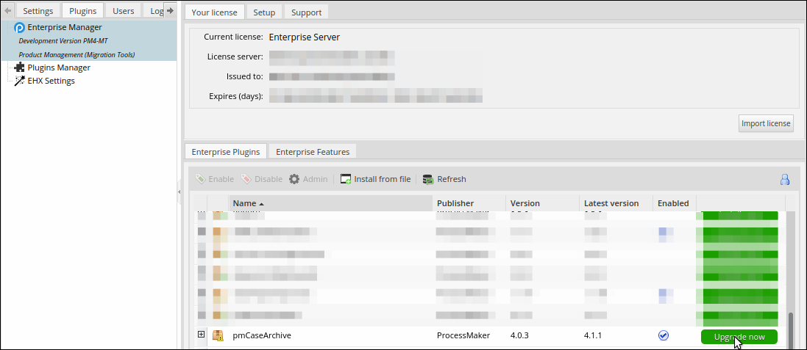
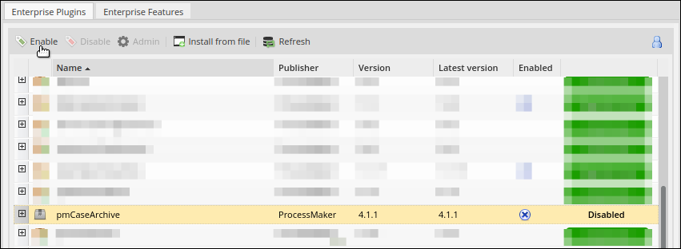
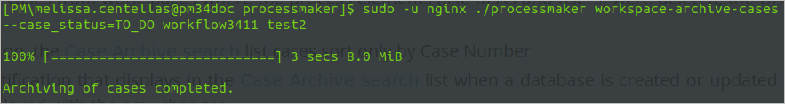
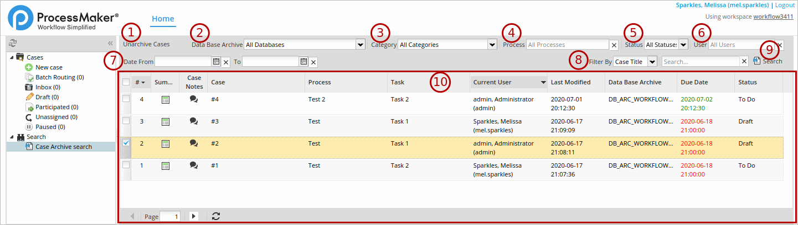
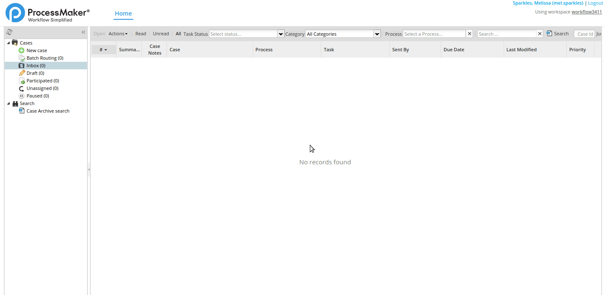

- Overview
- How the Plugin Works
- Requirements
- Install and Enable the Plugin
- Restrictions and Recommendations Before Starting
- Archive and Unarchive Cases
- Archive Cases Through the Command Line
- Unarchive Cases
- Unarchive Cases Through the User Interface - Case Archive Search
- Unarchive Cases Through the Command Line
- Completed Cases Examples
- Basic Examples
- Examples Using
--start_date - Examples Using
--end_date - Examples Using
--start_dateAnd--end_date - Examples Of Wrong Date Interval
- Add Report Tables to an Archive
- Regenerate Archived Report Tables
- Archive Manifest Log
- Error Log
 Plugin Version:
4.1.1 |
Release Notes
Plugin Version:
4.1.1 |
Release Notes
Overview
In running systems, where a lot of information is manipulated every day, data is very important to be consulted, but not all data is required to be stored in the database, especially old data. That's the reason why old information is archived to get historical data.
The Case Archive Plugin is designed to empower ProcessMaker in order to provide the functionality to archive and unarchive old cases, thus the data in ProcessMaker tables is reduced and the database queries resolution gets faster.
Moreover, Case Archiving is a plugin designed to manage the database efficiently. The case archiving functionality decreases data size within the database, allowing to decrease source consuming and database stress, while the unarchiving functionality allows to restore all or specific archived cases.
Its main characteristics are:
- Supports PHP 7.1.x, 7.2.x, and 7.3.x.
- Allows ProcessMaker users with the proper permissions to archive and unarchive millions of cases.
- Creates records in the database instances to fast access. Access the database through the PHP My Admin or the SQL console.
Note: The user that was used to install ProcessMaker in the server has the permissions to create databases and access to all databases in the server. The user is able to change the MySQL location.
- User interface to search archived cases and see the case status. User interface is similar to the Advanced Search.
- Allows for better maintenance and audit controls for ProcessMaker instances.
- Ensures that large scale implementations can offload old cases from the main inbox, in order to ensure speed at high scale.
- Cases can be unarchived to user inboxes at any time.
- Allows to decrease source consuming and database stress.
How the Plugin Works
The following points describe how the Case Archive plugin works:
- Cases can be archived by using console commands.
- Cases can be unarchived by using the user interface and console commands.
Requirements
ProcessMaker Compatibility
- This plugin version is fully compatible with ProcessMaker 3.3.2 and later.
User Requirements
- The user role needs to have the
CASE_ARCHIVE_LISTpermission to access the Case Archive Search. - The user role needs to have the
CASE_ARCHIVE_UNARCHIVEpermission to unarchive cases through the interface. - According to your web server, the Apache or NGINX permission to archive and unarchive cases into the server through the console commands.
Install and Enable the Plugin
Follow these steps to complete the enterprise plugin installation.
1. Log in with a user, such as "admin", who has the PM_SETUP_ADVANCE permission in their role.
2. Go to ADMIN > Plugins > Enterprise Manager.
3. In the Enterprise Plugins tab, install the plugin doing one of the following:
- Click
 Install from File and upload the plugin file.
Install from File and upload the plugin file. - Click the Case Archive plugin's Install now or Upgrade now buttons in the list of available plugins.

For more information about plugin options, see Enterprise Manager Tool.
4. After installing the plugin, make sure that the plugin is enabled  . If the plugin is not enabled, click the Enable button, as shown in the graphic below.
. If the plugin is not enabled, click the Enable button, as shown in the graphic below.

After enabling the plugin, you can archive and unarchive cases through the console commands.
Permissions
After enabling the plugin, the following permissions are enabled:
- CASE_ARCHIVE_LIST: Enables the Case Archive search option under Home > Search. Also, the search criteria is enabled.
- CASE_ARCHIVE_UNARCHIVE: Enables the Unarchive Cases option where cases can be unarchived.
Restrictions and Recommendations Before Starting
Take into consideration the following restrictions:
- It is not possible to archive cases from multiple workspaces. The Archive and Unarchive commands just work in the workspace where the plugin is enabled.
- Unarchiving cases is limited to the user interface. Only 25 cases can be unarchived at the same time in the Case Archive search interface.
- If a workspace database schema is updated (tables related to the cases), the Case Archive database does not synchronize the workspace schema.
Take into consideration the following recommendations:
- Do not run the Archive and Unarchive commands as a root user.
- If the user unarchives cases from workspaces where the process elements (like tasks and users) were deleted, the Unarchived cases can present problems like not listing in the Inbox.
- For performance reasons, the Case Archive search list cases are sorted only by Case Number.
- The Case Archive notification that displays in the Case Archive search list when a database is created or updated is cumulative. Therefore, the prior week's created/updated databases display with the new changes.
- It is recommended to run the archive command without using ProcessMaker when creating or routing cases to avoid errors in the archived cases. It is possible by using a maintenance window frame.
- The Case Archive starting and ending dates are based on the case creation date.
- Paused cases can only be unarchived through the Command Line.
- As a best practice unpause paused cases before archiving them because paused cases are on hold to perform a step.
Archive and Unarchive Cases
The Case Archive plugin has two options, archive and unarchive cases depending on what the requirement is.
Archive Cases Through the Command Line
Take into consideration that you can just archive cases through the command line. To archive cases, follow the next steps:
In the console, depending on your web server, log on as Apache or NGINX user.
Go to the following path:
cd /opt/processmaker Archive cases by running the following command:
./processmaker workspace-archive-cases [workspace_name] [data_base_name] Where:
- workspace_name: Workspace name is where the cases are to be archived. This setting is required.
- data_base_name: Database name is where the information cases are to be archived. If the database name exists, it updates the database cases. This setting is required. This name after creation preceded by
[workspace]_XXXXin uppercase and the name automatically converts in uppercase without the use of special characters but base English alphabet, a hyphen, underscore and Numbers.A - Z, 0 - 9, -, _
-
Optionally, the command has the following:
Note: The Case Archive start_date and end_date are based on the case creation date.
- --start_date: To define a starting date for the case archive. Set it between single quotes in the rfc3339 format:
YYYY-MM-DDThh:mm:ss+00:00. The time isUTC 00:00:00. If no starting date is defined, the plugin takes the date of the older case of the ProcessMaker instance in the workspace. - --end_date: To define an ending date for the case archive. Set it between single quotes in the rfc3339 format:
YYYY-MM-DDThh:mm:ss+00:00. The time isUTC 23:59:59. If no ending date is defined, the plugin takes the date of the newest case of the ProcessMaker instance in the workspace. - --process: To define a specific process that has to be inside single quotes
Process UID. - --category: To define a specific process category that has to be inside single quotes
Process Category UID.Note: It is only possible to select a process or a category but not both.
- --case_status: To define a specific case status to be filtered using
TO_DO,DRAFT,COMPLETED,CANCELLED. - --case_number: To define a specific case number. This option does not require any other command options.
- --start_finish_date: Available as of Case Archive 4.1.1. To define a starting date for the case archive of all completed cases. Set it between single quotes in the rfc3339 format:
YYYY-MM-DDThh:mm:ss+00:00. Take into account that the starting date works for cases equal or major to the defined date. The date uses the case propertyAPP_FINISH_DATE. - --end_finish_date: Available as of Case Archive 4.1.1. To define a end date for the case archive of all completed cases. Set it between single quotes in the rfc3339 format:
YYYY-MM-DDThh:mm:ss+00:00. Take into account that the end date works for cases equal or less to the defined date. The date uses the case propertyAPP_FINISH_DATE.
Note: Check detailed examples about how to use the --start_finish_date and --end_finish_date parameters, including how to do not use these command parameters.
- --start_date: To define a starting date for the case archive. Set it between single quotes in the rfc3339 format:
For example, run the following command line:
sudo -u nginx ./processmaker workspace-archive-cases --case_status=TO_DO workflow3411 test2 
The next time that you open the Case Archive search user interface, the following confirmation message displays:

Take into account that this is a confirmation message of a new repository. However, there could be a message of an update in the archive repository, which means that you can cumulate archived cases in a created database.
The archive process has to work without interruptions. However, there is a runtime to be considered for large processes.
Any error in the case archiving has to consider ways not to lose, nor corrupt data in ProcessMaker and a possibility to recover information. The possible error messages are the following:
- The
workspace_nameparameter is mandatory to use in the case archive. Without this definition, the commandworkspace-archive-casesreturns the following error message:We are very sorry but you didn't define a valid workspace, please contact your system administrator to provide information about the workspace - The
data_base_nameparameter is mandatory to create a new database with the archive or allocate the archive in an existing archive database. Without this definition, the commandworkspace-archive-casesreturns the following error message:Please send the two required arguments (workspace and Database name collection(). - If the
data_base_namealready exists, ProcessMaker requests a confirmation to be added in the database archived the cases with the following message to receive a confirmation and then press Intro:The Archive DataBase already exists, do you want to add this archiving into the workflow_XXXX Archive? (Y 'Yes' / N 'No'): - If any invalid database name is entered, the following error message displays:
The Archive DataBase name is using an incorrect format please use capital letters that can have numbers and all spaces have to be replaced with a hyphen or underscore
Unarchive Cases
There are two ways to unarchive cases:
Unarchive Cases Through the User Interface - Case Archive Search
The Case Archive search has the same characteristics as the Advanced Search except for some exceptions that describe each point. A user with the CASE_ARCHIVE_LIST permission can access the Case Archive search with the list of all the archived cases with the possibility to search specific cases with a criteria search. A user with the CASE_ARCHIVE_UNARCHIVE with the CASE_ARCHIVE_LIST permission, the Case Archive search brings the Unarchive Cases option. All archived cases are listed in Home > Search > Case Archive search. The following graphic describes the Case Archive search:

Item one describes the Unarchive option. Items two to nine describe the search criteria that helps you to search archived cases by using some criteria, find specific information, especially when a great number of cases were archived. And item ten describes the list of archived cases:
- Unarchive Cases: After selecting some cases or all cases in the list page, this option is enabled to unarchive cases. Remember that only 25 cases can be unarchived at the same time.
- Data Base Archive: Allows you filter cases of databases created for archived cases.
- Category: Allows you to filter cases of a defined process category.
- Process: Allows you to filter cases of a specific process by entering the name of a process. This field has an autocomplete feature, which lists all the processes matching cases.
- Status: Allows you to filter cases by selecting all statuses or a specific status, such as Draft, To Do, Completed and Canceled.
- User: Allows you to filter cases by entering a specific user. This field displays a suggestion field with an autocomplete feature. All coincidences display while text is entered.
- Date From - To: Allows you to filter cases by selecting a date range of the archived cases by clicking on the calendar icon. Click on the X button next to the Date From and To fields to clear the dates selected.
- Filter By: Allows you filter cases by Case Number, Case Title or Task, and where the search of the text entered in the Search field is performed.
- Search: After clicking this button, displays results of the defined search criteria.
- Archived Case List: It displays a list of archived cases with the following information:
- Case Number (#)
- Summary that just displays:
- General Information: Case properties and current tasks.
- Uploaded Documents: Files uploaded to Input Documents.
- Generated Documents: Files generated in Output Documents.
- If you have permissions upon the process, the Case Notes displays.
- Case Title (Case)
- Process
- Task
- Current User
- Last Modified
- Data Base Archive
- Due Date
- Status
The filter is saved per user as in the Advanced Search - Save Filter.
While a case is archived, it is not possible to open it under any circumstance, but it is possible to access the case summary and case notes if the user belongs to the workspace and has the pertinent permissions.
Any update in the Case Archive displays notifications in flash messages at the right-bottom of the screen with a descriptive note as follows:
After one week of a database creation, the notification disappears from the list of new databases. The notifications are:
- New Case Archive Database:
A new database archive has been added “TRAVEL_REQUEST_2020“ - Update in an existing database:
Database archive updated “TRAVEL_REQUEST_2020“ - Unarchived cases (Just for users that have the permission to unarchive cases):
You have unarchived cases from the database archive “TRAVEL_REQUEST_2020“ You have unarchived cases from the database archive “TRAVEL_REQUEST_2019”, “ON_BOARDING_2003", “APRAISAL_REPORT_2020”
To unarchive cases, follow the next steps:
Go to Home > Search > Case Archive search. All the archived cases list.
Filter your cases to unarchive as described previously.
There is a checkbox to select cases. Select your cases or select all cases by clicking the checkbox at the list bar.
Click the Unarchive Cases button.
Confirm unarchiving cases.
After confirming, the unarchived cases are sent to the Task Manager for unarchiving.
The Task Manager finalizes unarchiving, and reloads the list if you are still in the Case Archive search.

Unarchive Cases Through the Command Line
Some users prefer to use the command line to run commands. That is why the process to unarchive cases can run using the command line. The procedure to unarchive cases is the same as the one to use to archive cases.
In the console, depending on your web server, log on as Apache or NGINX user.
Go to the following path:
cd /opt/processmaker Unarchive cases by running the following command:
./processmaker workspace-unarchive-cases [workspace_name] [data_base_name] Where:
- workspace_name: Workspace name is where the cases to unarchive are. This setting is required.
- data_base_name: Database name is where the cases information to unarchive are. This setting is required.
Optionally, the command has the following:
- --start_date: To define a starting date to unarchive cases. Set it between single quotes in the rfc3339 format:
YYYY-MM-DDThh:mm:ss+00:00. The time isUTC 00:00:00. - --end_date: To define an ending date for the case archive. Set it between single quotes in the rfc3339 format:
YYYY-MM-DDThh:mm:ss+00:00. The time isUTC 23:59:59. - --process: To define a specific process that has to be inside single quotes like
Process UID. - --category: To define a specific process category that has to be inside single quotes like
Process Category UID. - --case_status: To define a specific case status to be filtered using
TO_DO,DRAFT,PAUSED,COMPLETED,CANCELLED. - --case_number: To define a specific case number. This option does not require any other command options.
- -o: This restriction gives the option to overwrite any data while restoring the archive. Only in case, the archived database has been exported to a new server and that server has the same cases in their current workspace. If not the cases will not change the workspace information.
- --start_finish_date: Available as of Case Archive 4.1.1. To define a starting date for the case archive of all completed cases. Set it between single quotes in the rfc3339 format:
YYYY-MM-DDThh:mm:ss+00:00. Take into account that the starting date works for cases equal or major to the defined date. The date uses the case propertyAPP_FINISH_DATE. - --end_finish_date: Available as of Case Archive 4.1.1. To define a end date for the case archive of all completed cases. Set it between single quotes in the rfc3339 format:
YYYY-MM-DDThh:mm:ss+00:00. Take into account that the end date works for cases equal or less to the defined date. The date uses the case propertyAPP_FINISH_DATE.
Note: Check detailed examples about how to use the --start_finish_date and --end_finish_date parameters, including how to do not use these command parameters.
- --start_date: To define a starting date to unarchive cases. Set it between single quotes in the rfc3339 format:
For example, run the following command line:

The next time that you open the Case Archive search user interface, the following confirmation message displays:

Note: After the archived database does not have any cases within the database, it remains created unless it is deleted manually. Therefore it will not be listed in the Case Archive search. Consider that an empty database is not listed in the Case Archive search.
Warning: Archived cases can not be unarchived if the main process is not in the workspace. This inconsistency creates problems. Therefore, it is mandatory to have the main process in the workspace. If all cases from a process are archived, any modification of the process like removing a task is under the user's own risk. Pending cases that are in a removed task are lost unless the process is restored to its original structure.
Completed Cases Examples
Available Version: These examples are available as of Case Archive 4.1.1.
This section describes examples when archiving or unarchiving cases using the command line with the --start_finish_date and --end_finish_date parameters. Check the following examples:
- Basic examples
- Examples using
--start_date - Examples using
--end_date - Examples using
--start_dateand--end_date - Examples of wrong date interval
Use the --start_date and --end_date parameters to filter started cases::
- start_date: It is related to the creation of the case in
APP_CREATE_DATE. - end_date: It is related to the creation of the case in
APP_CREATE_DATE.
Consider that the examples that combine --start_finish_date and --end_finish_date with --start_date and --end_date might affect the performance while archiving or unarchiving cases.
Basic Examples
These examples provide basic knowledge using the --start_finish_date and --end_finish_date parameters. All of them apply also for unarchiving cases.
Example 1: Completed cases after December the 1st 2021.
Example 2: Completed cases before December 31st 2021.
Example 3: Completed cases between November 1st 2021 till November 31st 2021.
Example 4: Created cases after November 1st 2021 and completed to December 31st 2021.
Examples Using --start_date
These examples describe created cases starting from a specific date and completed till a specific date.
Example 1: Archive cases created on January the 1st 2020 and completed on December 31st 2020.
Example 2: Unarchive cases created on January the 1st 2020 and completed on December 31st 2020.
Example 3: Archive cases created on January the 1st 2020 and completed from December 31st 2020.
Example 4: Unarchive cases created on January the 1st 2020 and completed from December 31st 2020.
Examples Using --end_date
Created cases till a specific date and completed till a specific date.
Example 1: Archive cases created till December the 31st 2008 and completed on December 31st 2010.
Example 2: Unarchive cases created till December the 31st 2008 and completed on December 31st 2010.
Example 3: Archive cases created till December the 31st 2008 and completed as of December 31st 2010.
Example 4: Unarchive cases created till December the 31st 2008 and completed as of December 31st 2010.
Examples Using --start_date And --end_date
Created and completed cases in a date interval and completed till a specific date.
Example 1: Archive cases created between January 1st 2008 till December 31st 2012 and completed on December 31st 2014.
Example 2: Unarchive cases created between January 1st 2008 till December 31st 2012 and completed on December 31st 2014.
Example 3: Archive cases created between January 1st 2008 till December 31st 2012 and completed as of December 31st 2014.
Example 4: Unarchive cases created between January 1st 2008 till December 31st 2012 and completed as of December 31st 2014.
Example 5: Archive cases created between January 1st 2008 till December 31st 2012 and completed between January 1st 2014 till December 31st 2018.
Example 6: Unarchive cases created between January 1st 2008 till December 31st 2012 and completed between January 1st 2014 till December 31st 2018.
Examples Of Wrong Date Interval
The following section describe archived and unarchived cases in which their creation date is after the finished date. It is considered as a bad practice and might create an error with the running of the archive or unarchive commands. As a good practice, consider consequent date interval.
Example 1: Archive cases created on January the 1st 2020 and completed on December 31st 2010.
Example 2: Unarchive cases created on January the 1st 2020 and completed on December 31st 2010.
Example 3: Archive cases created till December the 31st 2008 and completed on December 31st 2000.
Example 4: Unarchive cases created till December the 31st 2008 and completed on December 31st 2000.
Example 5: Archive cases created between January 1st 2008 till December 31st 2012 and completed on December 31st 2004.
Example 6: Unarchive cases created between January 1st 2008 till December 31st 2012 and completed on December 31st 2004.
Example 7: Archive cases created between January 1st 2008 till December 31st 2012 and completed between January 1st 2004 till December 31st 2006.
Example 8: Unarchive cases created between January 1st 2008 till December 31st 2012 and completed between January 1st 2004 till December 31st 2006.
Add Report Tables to an Archive
The Case Archive plugin creates Report Tables in the Case Archive collections from processes in the main workflow through command line.
Add all the Report Tables to an Archive
Follow these steps to Report Tables to an archive:
Go to the following path:
cd /opt/processmaker Run workspace-archive-cases line command to add all the Report Tables of processes in an archive.
sudo -u nginx ./processmaker workspace-archive-cases [workspace_name] [data_base_name] Where:
- workspace_name: Workspace name is where the cases are to be archived. This setting is required.
- data_base_name: Database name is where the information cases are to be archived. This setting is required.
Exclude Report Tables
Follow these steps to exclude Report Tables from an archive:
Go to the following path:
cd /opt/processmaker Run --no_report_tables line command if you do not want to add the Report Tables information in the current collection.
sudo -u nginx ./processmaker workspace-archive-cases --no-report-tables [workspace_name] [data_base_name] Where:
- workspace_name: Workspace name is where the cases to unarchive are. This setting is required.
- data_base_name: Database name is where the cases information to unarchive are. This setting is required.
Resume Archiving Report Tables
Sometimes none or some of the Report Tables might have been archived. Follow these steps to resume archiving them:
Go to the following path:
cd /opt/processmaker Run workspace-archive-report-tables <workspace> <collection> line command to complete listing the Report Tables missing in a collection when it is achieved without the Report Tables.
sudo -u nginx ./processmaker workspace-archive-report-tables [workspace_name] [collection_name] Where:
- workspace_name: Workspace name is where the cases are to be archived. This setting is required.
- collection_name: Collection name is a list of Report Tables to be archived. This setting is required.
Regenerate Archived Report Tables
The Case Archive plugin regenerates Archived Report Tables from line commands according to different scenarios. They are used to create consistency between the archive collection’s data and the report table structure when it is updated.
Regenerate an Archived Report Table
Follow these steps to regenerate an Archived Report Table in the case archive collection:
Go to the following path:
cd /opt/processmaker Run workspace-archive-report-tables-regeneration <workspace> <collection> line command to regenerate an Archived Report Table in the case archive collection when it doesn't have the base report table in the application workspace.
sudo -u nginx ./processmaker workspace-archive-report-tables-regeneration [workspace_name] [collection_name] Where:
- workspace_name: Workspace name is where the cases are to be archived. This setting is required.
- collection_name: Collection name is a list of Report Tables to be archived. This setting is required.
Regenerate all Data from an Archived Report Table
Follow these steps to regenerate all data from an Archived Report Table:
Go to the following path:
cd /opt/processmaker Run workspace-archive-report-tables-regeneration --all-data <workspace> <collection> line command to regenerate the entire report table of the archive collection. This command is highly recommended if a change has been made in the base report table such as a modification in the report table structure.
sudo -u nginx ./processmaker workspace-archive-report-tables-regeneration --all-data [workspace_name] [collection_name] Where:
- workspace_name: Workspace name is where the cases are to be archived. This setting is required.
- collection_name: Collection name is a list of Report Tables to be archived. This setting is required.
Note: This process has to encrypt the APP_DATA information and generate all report table information. As a result, some time is required to perform this generation process.
Archive Manifest Log
Logs are created per archived database and workspace managed as a manifest of changes with the following information.
- Register all archived cases through the command line mentioning the filter, the cases, date, and the user.
- Register all archived cases as an update of a current archive through the command line mentioning the filter, the cases, date and user.
- Register all unarchived cases through the command line mentioning the filter, the cases, date and user.
- Register all unarchived cases through the Case Archive search user interface mentioning the cases, date, user and role.
For example:
Error Log
For the error log, take into account the following:
- All errors are logged in the ProcessMaker Standard Logs that describe all references for the error occurred based on the ProcessMaker logs format.
- All errors are logged in the Archive Manifest Log with the filter selected, time, user, and error type.